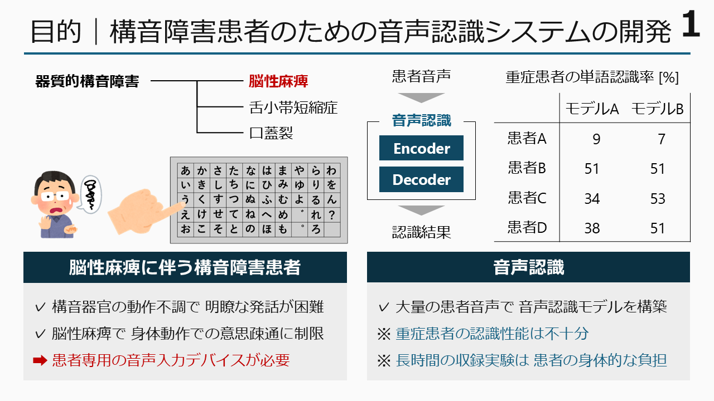
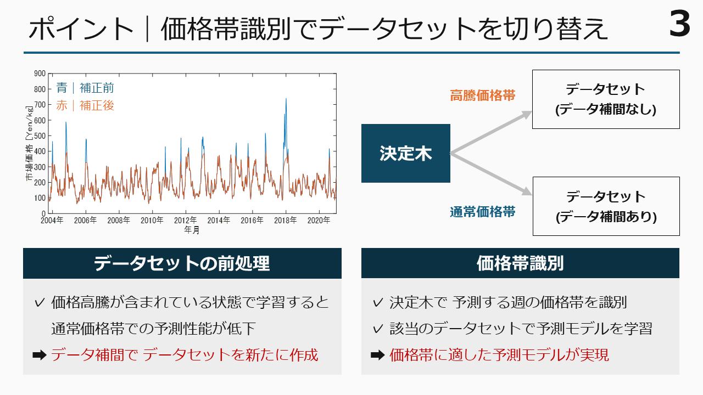
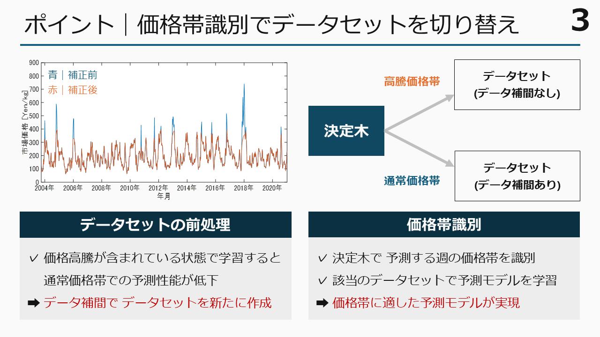

進行中の研究テーマ
ヘイトスピーチ音声を対象としたマルチタスク音声認識
大島 隆太郎（大阪大学 2025年度 M1）
情報処理学会（2025）


統合型敵対的生成ネットワークを用いた低解像度・低解像度画像のための画像強調
小林 寧生（東京科学大学 2025年度 M1）
情報処理学会（2025）APSIPA（2025）


発話特性を考慮した構音障害患者のためのキーワード音声認識
戸叶 遥斗（大阪大学 2025年度 M1）
情報処理学会（2025）音響学会（2025）


アカペラ楽曲を対象とした歌声評価システムの開発
高井 日美暉（立命館大学 2025年度 B4）
接触面の摩擦力を考慮した天井移動ロボットの移動制御
藤井 愛奈（立命館大学 2025年度 B4）
単一カメラを用いた自律型移動ロボットの走行計画
岡田 隆志（立命館大学 2025年度 B4）
バッテリー残量を考慮したマルチエージェント経路計画アルゴリズムの開発
廣澤 考冶（立命館大学 2025年度 B4）
ユーザの動作認識に基づく知能化空間によるサービス機能の提示
森田 勝之（立命館大学 2025年度 B4）
インフレータブル構造を搭載した家具運搬ロボットの開発
劉 沐恩（立命館大学 2025年度 M1）
ロボットアームを用いた絵画の特性に基づくモザイクアート生成
朴 峻佑（立命館大学 2025年度 M1）
周波数特性を考慮したスパース画像のためのVisual SLAM
河原 壱樹（立命館大学 2025年度 M1）
拡散モデルを用いたロボットアームによるグルーピング動作計画
Hai Minh Hieu Bui（立命館大学 2025年度 M2）
マルチカメラを用いたリアルタイム人物トラッキング
峯崎 翔琉（立命館大学 2025年度 M2）
テレプレゼンスロボットを用いたメタバース空間の提案
錦織 勇飛（立命館大学 2025年度 M2）
介護訓練ロボットにおけるVRフィードバックシステムの開発
遠藤 優貴（立命館大学 2025年度 M2）
移動機構の切り替えシステムを搭載した屋外移動ロボットの開発
鈴木 優介（立命館大学 2025年度 M2）
知能化空間における空間コーディングシステムの提案
吉田 集（立命館大学 2025年度 D1）
路肩の除草作業のための自律型移動ロボットの開発および分散制御
松下 優希（立命館大学 2025年度 D1）
筋電位信号を用いた把持補助デバイスの開発
Angga Rahagiyanto（立命館大学 2025年度 D2）
過去の研究テーマ
植物工場のための栽培環境モニタリングに関する研究
 



通話音声を対象とした音声強調に関する研究
正弦波モデルに基づく通話音声のピッチ推定
細田 侑也（大阪大学 2021年度 博士）
IEEE TASLP, APSIPA(2021)
正弦波モデルに基づく通話音声の帯域拡張
細田 侑也（大阪大学 2021年度 博士）
IEICE, EUSIPCO(2021)
データ埋め込みを用いた通話音声の帯域拡張
細田 侑也（大阪大学 2021年度 博士）
CSSP
音声を介したマルチメディア通信に関する研究
スペクトル包絡を考慮した画像音声変換
細田 侑也（大阪大学 2018年度 修士）
IEICE(Letter), NOLTA(2018年), 日本音響学会春季(2017年)